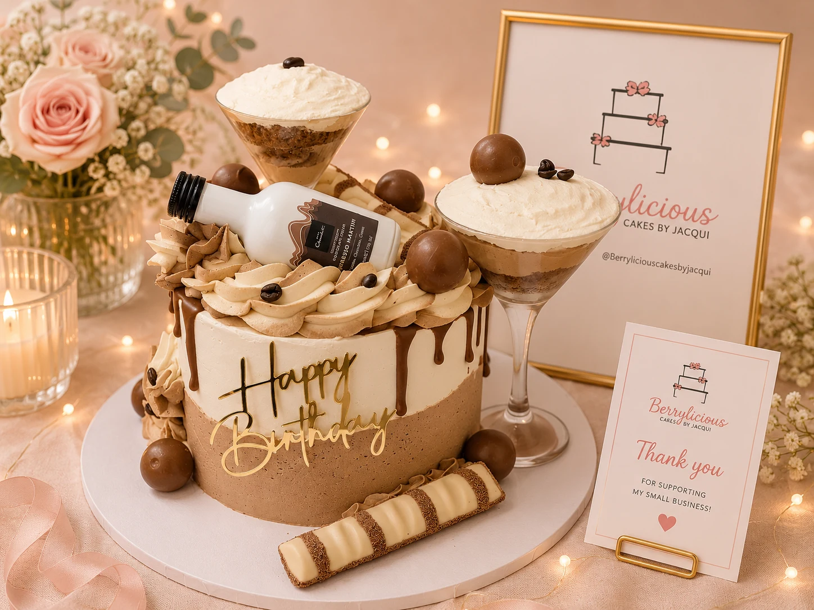
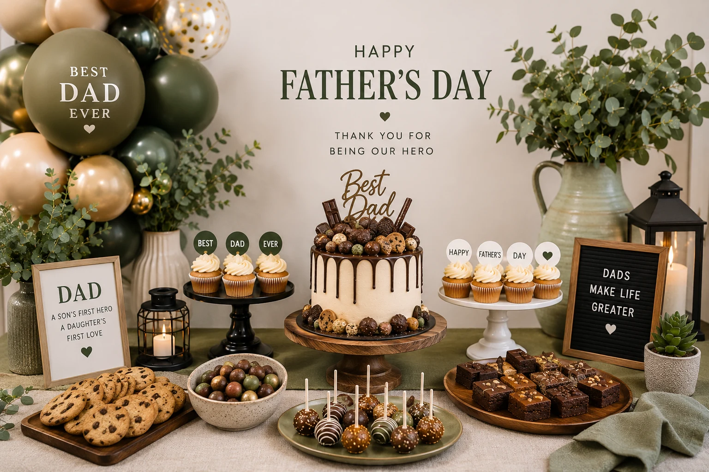
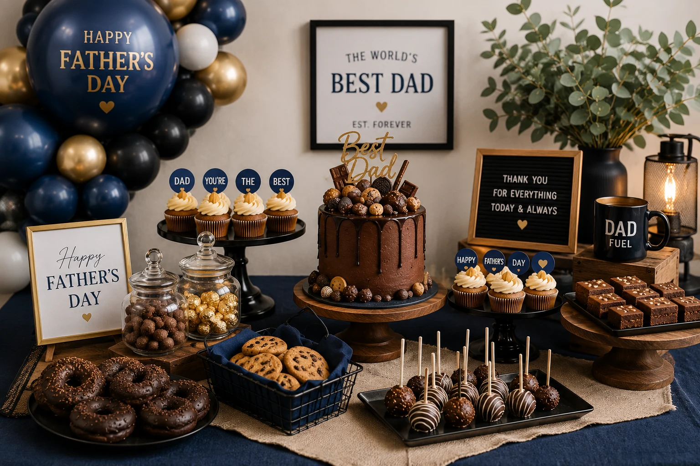

Father's Day dessert tables are one of the easiest ways to turn a simple family gathering into something genuinely memorable. Whether you're planning a relaxed garden BBQ, a football-themed party, a coffee-and-chocolate setup or a luxury family lunch, a styled dessert table instantly creates a focal point for the celebration — and gives everyone something to photograph.
At Little Moment Studio, we create balloon displays and styled celebration setups across Kent. Father's Day is one of our favourite occasions to style because it pushes you away from the usual pastels and into something bolder, more personal and genuinely different.
Here are six dessert table ideas that work beautifully for Father's Day — from elegant and masculine to funny and personal.
Why Father's Day Dessert Tables Work So Well
A dessert table gives the celebration a visual anchor. Rather than a cake sitting on a side table and a few balloons in the corner, everything is brought together in one styled display that sets the tone for the whole event.
For Father's Day specifically, it works particularly well because:
- The themes range from elegant and sophisticated to playful and funny
- It creates a natural photo moment the whole family will want to capture
- Balloons, cakes, cupcakes and props can all reflect Dad's specific personality and interests
- It feels noticeably more thoughtful than a supermarket cake on a plate
The One Rule
Pick one consistent colour palette and repeat it across the balloons, cake, cupcakes and props. Coordinated styling always photographs better than a mix of unrelated elements — even if each individual piece is beautiful on its own.
Idea 1: Modern Neutral Father's Day Dessert Table
This is one of the most versatile and universally flattering Father's Day setups — it works in any home, any venue and for any age of dad.
| Element | Details |
|---|---|
| Colour palette | Black, white, beige, chocolate brown, gold accents |
| Cake | Chocolate drip cake or dark buttercream finish |
| Cupcakes | Coffee-themed or gold chocolate cupcakes |
| Balloon styling | Neutral garland in black, white, mocha and gold |
| Props | Matte black cake stands, wooden textures, candles, "Best Dad" gold topper |
| Best for | Modern homes, restaurant celebrations, adult family dinners |
The key with a neutral palette is contrast — matte black against white and warm gold stops the setup from feeling flat. Wooden props and candles add warmth without adding colour.
Idea 2: BBQ & Beer Garden Dessert Table
Perfect for outdoor Father's Day gatherings and one of the most relaxed setups to put together. The rustic, laid-back aesthetic suits garden parties and BBQ celebrations where you want the styling to feel fun rather than formal.
| Element | Details |
|---|---|
| Colour palette | Deep blue, black, chrome silver, natural wood, cream |
| Desserts | Burger cupcakes, brownie stacks, beer-themed cupcakes, chocolate drip cake, donut wall |
| Decor | Rustic wooden crates, artificial greenery, kraft paper table runners, wooden signs |
| Balloon styling | Organic garland in black, chrome silver and deep blue |
| Best for | Garden parties, outdoor celebrations, relaxed family BBQs |
Styling Tip
A donut wall is one of the easiest high-impact additions to a BBQ dessert table — it photographs beautifully, guests love it and it takes no styling skill to set up. Pair with a simple wooden stand and matching twine details.
Idea 3: Football-Themed Father's Day Dessert Table
Football themes are always popular for dads and can be styled in lots of ways — from classic green and black to premium trophy styling or a personalised team-colour setup. Father's Day falls during the summer, which makes it a natural fit with end-of-season celebrations too.
| Style | Palette | Best For |
|---|---|---|
| Classic football | Pitch green, black, white, silver | Any football fan |
| Trophy football | Green, black, white, gold | Dad who plays or coaches |
| Team-colour accent | Green, white, black + one team colour | Personalised setup |
| Luxury football | Emerald, black, champagne, white | Adult milestone birthday |
Football cupcakes, a personalised cake topper and a team-colour balloon garland are the three elements that tie the whole table together. For more football party inspiration, see our full football party balloon and dessert table ideas guide.
Idea 4: Coffee & Chocolate Dessert Table
One of our favourite Father's Day themes — sophisticated, indulgent and genuinely different from anything you'll see on a supermarket shelf. This palette feels premium without being overly styled, and it works beautifully for dads who appreciate good coffee, chocolate or both.

| Element | Details |
|---|---|
| Colour palette | Mocha, cream, espresso brown, gold, ivory |
| Hero cake | Espresso martini cake or chocolate drip cake |
| Desserts | Chocolate brownies, coffee macarons, tiramisu cups, Ferrero-inspired cupcakes, chocolate-covered strawberries |
| Balloon styling | Mocha, cream, gold and ivory organic garland |
| Props | Vintage coffee props, gold cake stands, warm candle lighting |
The overall look feels sophisticated and premium — genuinely one of the most photogenic setups for an adult Father's Day celebration. We work with Berrylicious Cakes by Jacqui for bespoke celebration cakes and cupcakes that pair beautifully with this kind of table.
Idea 5: Whisky & Cigar Lounge Theme
A more elegant Father's Day concept for adult evening celebrations or milestone birthdays that fall around Father's Day. The styling is dark, warm and intentionally sophisticated — the kind of table that feels like it belongs in a private members' club rather than a children's party.
The Palette
Deep chocolate brown, dark burgundy, black, amber and gold. Warm candlelight is the single most important styling element for this theme — it transforms the whole mood of the table without any additional props.
| Element | Details |
|---|---|
| Cake | Dark chocolate cake with gold leaf accents |
| Cupcakes | Gold chocolate cupcakes or whisky-glazed brownies |
| Props | Faux whisky bottle props, vintage-style signage, leather or velvet textures |
| Balloon styling | Deep brown garland with burgundy, black and gold accents |
| Lighting | Warm candles throughout — this theme lives or dies by the lighting |
| Best for | Evening celebrations, 40th/50th/60th birthday around Father's Day |
Idea 6: Cute & Funny “Dad” Cupcake Themes
Sometimes the most memorable Father's Day celebrations are the most personal ones — where the cupcakes make Dad laugh rather than impress the guests. Themed fondant cupcakes that reflect his sense of humour, his hobbies or an inside joke are the kind of detail that gets remembered long after the party.
- “Best Dad Ever” fondant toppers
- Tool-themed cupcakes (hammer, spanner, drill)
- BBQ and grill cupcakes
- Dad joke toppers
- Moustache fondant designs
- Beer mug cupcakes
- Tie and shirt cupcakes
These work particularly well for younger children helping to organise the celebration — they're easy to brief a cake maker on, they always go down well and they give the dessert table a personal quality that no pre-made setup can replicate.

Balloon Styling for Father's Day Dessert Tables
The balloon display creates most of the visual impact around the dessert table. For Father's Day, the colour palette is usually darker and more saturated than the pastels used for baby showers or first birthdays — which makes the display feel distinctly different and noticeably more grown-up.
| Theme | Balloon Colours |
|---|---|
| Modern neutral | Black, white, mocha, gold |
| BBQ & beer garden | Black, chrome silver, deep blue, white |
| Football | Pitch green, black, white, gold |
| Coffee & chocolate | Mocha, cream, gold, ivory |
| Whisky lounge | Burgundy, dark brown, black, gold |
| Fun Dad theme | Navy, white, gold — or match to a chosen colour story |
Organic garlands (freeform, cloud-shaped balloon arrangements without a rigid frame), sailboard frames (a backing board positioned behind the table, covered in balloons), neon signs, easel signs and plinth displays all work well for Father's Day setups. The display style depends on the venue — a garden BBQ suits a relaxed organic garland, while an evening dinner setup suits a more structured balloon arch or backdrop.

Cake & Cupcake Pairing Ideas
A coordinated cake and cupcake setup always photographs better than mismatched elements. The cupcakes don't need to be identical to the cake — they just need to feel like they belong to the same table.
| Main Cake | Matching Cupcakes |
|---|---|
| Chocolate drip cake | Coffee buttercream cupcakes |
| Espresso martini cake | Mocha fondant or Ferrero-inspired cupcakes |
| Football cake | Grass-effect or football topper cupcakes |
| BBQ-themed cake | Burger cupcakes or pretzel-and-caramel cupcakes |
| Whisky lounge cake | Gold chocolate cupcakes or dark ganache cupcakes |
| Dark chocolate cake | Brownie bites and coffee macarons |
Father's Day Dessert Table Styling Tips
Vary the Heights
Use cake stands, wooden crates, cylinders and plinths at different heights across the table. A flat table always looks less impressive than one with layers — the variation creates depth and gives the eye somewhere to travel.
Stick to One Colour Palette
Too many colours make a dessert table look busy rather than styled. Three to five coordinated colours repeated across every element is far more effective than trying to include everything.
Add Soft Lighting
Fairy lights and candles instantly lift a dessert table. For Father's Day themes especially — where the palette tends to be darker — warm lighting prevents the setup from feeling heavy.
Use Matching Signage
A personalised sign or framed print ties the whole table together and gives it a finished, intentional look. It doesn't need to be elaborate — even a simple “Happy Father's Day, [Name]” sign on an easel makes a noticeable difference.
Father's Day Dessert Tables in Sittingbourne & Kent
At Little Moment Studio, we create balloon displays and styled celebration setups for birthdays, baby showers and seasonal events across Kent and the Medway area.
We also work with Berrylicious — Cakes by Jacqui, our recommended cake maker based in Rainham, Medway, who creates handmade bespoke cakes and cupcakes that pair beautifully with balloon styling and dessert table setups. Whether you need an espresso martini cake, themed fondant cupcakes or a personalised chocolate drip cake, Jacqui can help coordinate the sweet side of the table.
Whether you want a modern masculine setup, a football-themed party, a luxury coffee-and-chocolate dessert table or a fun family Father's Day celebration, we can help create a setup that feels genuinely personal and memorable.
Father's Day is one of those celebrations where a little extra styling goes a very long way — and chocolate always helps.
Planning a Father's Day Celebration?
Tell us about the setup you have in mind and we'll help bring it together — from balloon styling through to cake coordination. Free consultation, no obligation.